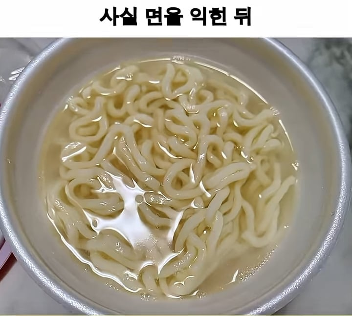
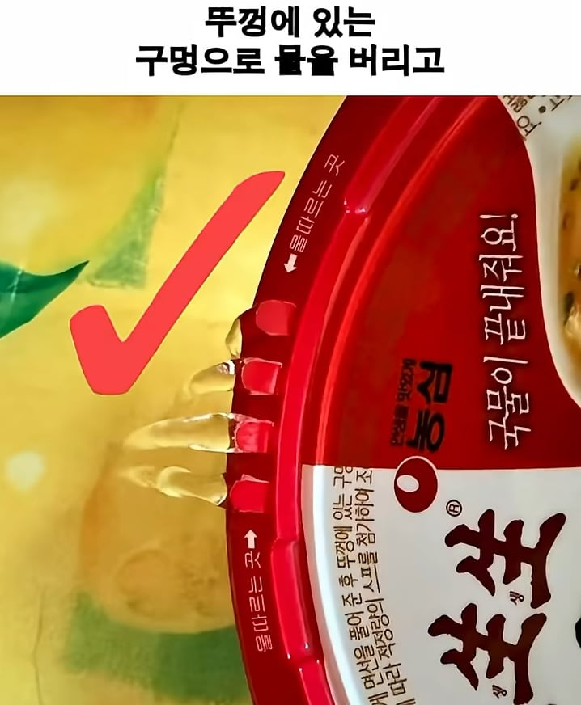
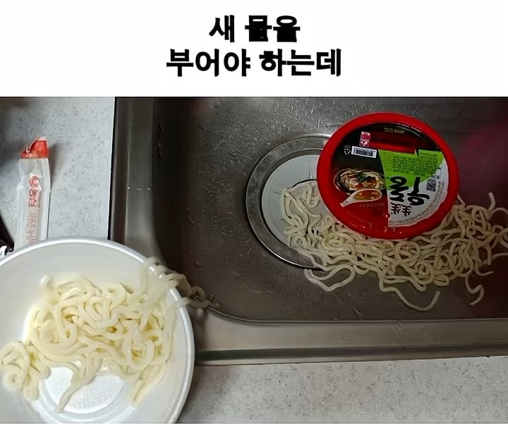

조리법에도 써있지만 실제로 모르는 사람들이 있음



조리법에도 써있지만 실제로 모르는 사람들이 있음
씨발 편의점 생각나네 저거 할려고 음쓰뚜껑열었는데 썩은내 진동 웩 시발 밥맛다떨어짐 얼마나 오래 방치한거야 개색야
저거 생생우동컵라면 문제가 설명서를 너무작게써놧음;
그맛에먹는거아니었어? 그 묘한 인공내랑..
어?
새우먹을때 그 시큼하면서 간질간질한 그 맛으로 먹는데
어쩐지 막 맛있지않더라니
다음에 한번 다시 먹어봐야겠네
대체 설명을 왜 안읽는거임?
접근이 틀렸음
설명을 안읽는걸 베이스로
설계해야함
이게 맞음.
생생우동 안먹으면 제조사만 손해임.
매출을 올리려면 설명을 안읽는거로 설계했어야 함. 일반라면과 만드는 방식이 다르다면.
라면 끓일때마다 설명서 읽고 끓임??? 제정신이야 너? 진짜 그런다면 일상생활 존나힘들듯 물마실때도 정수기 설명서 보고 마시고 버스탈때 카드리더기 뒤에 써있는 글 읽고 타고
엘리베이터 탈때마다 써있는 글은 다 읽고 타고 제정신은 아닌거같은데
뭔 개소리야 시발 저능아같은 소리를 당연하게 하고 앉아있냐
라면 먹을때마다 설명서 읽겠냐? 새로운 라면 먹을 땐 적어도 보고 끓여야 할거아냐 하여튼 돼지새끼마냥 허겁지겁 처먹기만 하니까 모르지
ㄴㄴ 니가 잘못알고있음
예를 들어 진라면도 예전엔 550미리 넣으라고되어있었는데 요즘은 500기준으로 바꿔어서 나옴
언제 권장 물양이 바뀔지모르는데 매번 읽고 끓여야지 니 논리대로라면
니가 존나 돼지새끼마냥 허겁지겁 쳐먹기만 하니까 모르지
언제 몇미리로 바뀔지모르는데 그걸 안보고 끓여?? 저능아신가요?
지도 안보면서 내로남불은 시이벌 ㅋㅋㅋㅋ 언제바뀔지모르니까 매번 보고 끓여라 등신아
법이 바뀌면서 또는 사고가 생기고나서 부터 설명서에 금지사항도 같은제품이라도 계속 바뀌는데 쓸때마다 확인하셔야죠?? 니말대로면
그냥 남이하면 병신 니가하면 정상 이딴논리 ㄴㄴ
ㅇㅇ화이팅!
이새낀 진짜 정신병있네
병신이노
물 따르는 구멍 있는거 보면 대충 유추 될 거 같은데 아예 생각 안한 사람들 많아서 놀랍긴함
봉지라면은 한번끓이고 물버리란말 안써있더라
조리법대로하면 진짜 고트임 존맛
라면이 아무리 맛있다 한들 생생우동보다 맛있을까?
솔까 생생우동 졸라맛있음. 균일한 맛과 만족감, 간편성과 저렴한 가격까지... 유일한 단점이 생면이라 보존재 신맛을 한번 씻어줘야한다는점이라 영하에서 언다는거. 근데 이건 물리적으로 불가능한거라...
엥 의도된거아니었음? ㅋㅋㅋㅋㅋㅋㅋㅋ
저거 물버릴때 뚜껑 꼭 잡고 해라
안그럼 면삶고 면버리는 청년된다
뚜껑에 물버리는 부분이 있으면 조리법 안 읽어도 눈치까야 되는거 아니냐고 ㅋㅋㅋㅋ 우동에 물버릴게 면 익힌 물 말고 더 있어?
아하! 국물을 버리고 싶을때 버리는 용도인가보군!

시큼한게 맛있어서 그냥 먹음
일반적인 방법과 차이가 있다보니 모르는 사람들 많음
물버릴때 꼭 뚜껑을 꽉 누르고 버려야 한다. 안그럼 면 다 쏟음
ㅈ같음 ㅋㅋㅋ 맨날 흘린다 ㅅㅂ 앞에 꽉잡으면 옆으로 존나 흘러나옴 ㅋㅋㅋㅋ
진짜 처음 알았어 면 익힌 물을 버리고 다시 뜨거운 물을 부으라는거야 지금?
아는데 존나 귀찮아서 걍 먹는거아니었음?
면 보존을 식초로 해서 한 번 헹구는 건데 이래서 요즘은 알콜로 보존처리하는게 늘고 있음
웬만한 만원 하는 시중 우동들 빠따로 개패는게 생생우동임
생생우동 진짜 존맛도리임. 일반 라면이랑은 급이 다르지.